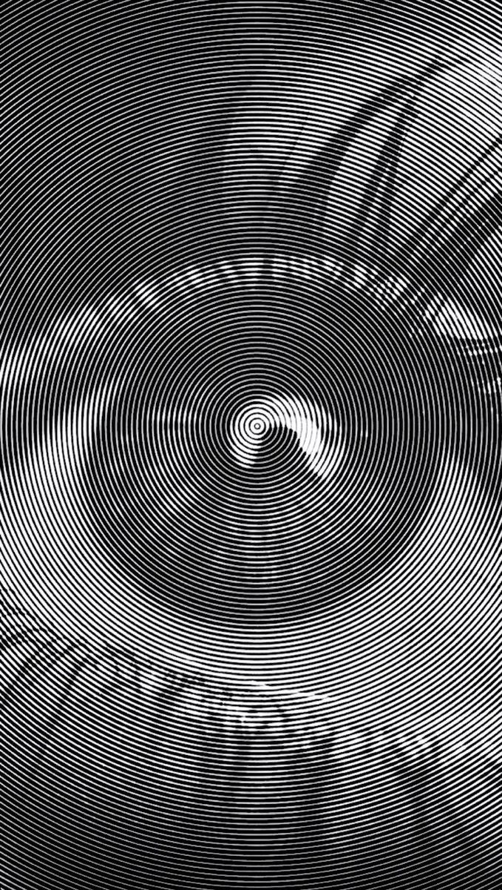

El arte de convertirse en uno mismo
Once actitudes para despertar la consciencia y habitar la vida desde una nueva mirada.

Hay momentos en la vida en los que comprender ya no es suficiente. Hemos leído, aprendido, buscado respuestas, recorrido caminos y acumulado experiencias que nos han permitido construir una determinada idea de quiénes somos. Y, sin embargo, llega un instante en el que todo ese conocimiento parece quedarse en la superficie.
Algo dentro de nosotros comienza a pedir otra cosa.
No se trata de saber más, sino de mirar de otra manera. De abandonar ciertas certezas, cuestionar nuestras propias interpretaciones y atrevernos a descubrir cuánto de lo que creemos ser responde verdaderamente a nuestra esencia y cuánto pertenece a los condicionamientos que hemos ido incorporando a lo largo de nuestra historia.
El despertar de la consciencia no es necesariamente un acontecimiento extraordinario. A menudo comienza de una forma mucho más silenciosa: cuando dejamos de reaccionar automáticamente, cuando somos capaces de observar nuestros pensamientos sin identificarnos por completo con ellos, cuando comprendemos que nuestras emociones necesitan ser escuchadas y no simplemente obedecidas.
Despertar es, en cierto modo, recuperar la capacidad de participar conscientemente en nuestra propia existencia.
Y ese proceso no se alcanza mediante una fórmula, una doctrina ni una acumulación de experiencias espirituales. Se cultiva en la manera en que vivimos, en cómo nos relacionamos con nosotros mismos, en nuestra disposición a aprender y en la actitud con la que recibimos aquello que la vida nos presenta.
Existen actitudes que favorecen ese movimiento interior. No como reglas que debamos cumplir para convertirnos en alguien mejor, sino como disposiciones que amplían nuestra percepción y nos permiten vivir con mayor profundidad.
A partir de las reflexiones de Mariana Kaplan en Con los ojos bien abiertos, nos adentramos en once de ellas.
1. La intención sincera: saber hacia dónde mira nuestra alma
Toda transformación verdadera necesita un punto de partida. Y ese punto no es necesariamente una decisión, una meta o un deseo, sino una intención.
La intención sincera es algo más profundo que querer que las cosas sucedan de determinada manera. No consiste en proyectar nuestros deseos sobre la realidad ni en esperar que el universo se acomode a nuestras expectativas. Consiste en reconocer honestamente qué nos mueve, qué estamos buscando y desde dónde emprendemos nuestro camino.
Podemos desear cambiar porque no soportamos determinadas circunstancias, porque queremos dejar de sufrir o porque imaginamos que, al alcanzar cierto estado, finalmente seremos felices. Pero también podemos iniciar un proceso de transformación desde un lugar diferente: el deseo genuino de conocernos, de comprender nuestros mecanismos internos y de vivir con mayor consciencia.
La diferencia es sustancial.
Cuando nuestra intención está condicionada por la necesidad de controlar los resultados, el camino se convierte en una negociación permanente con la vida. Cuando nace de una disposición sincera a descubrir, aprender y transformarnos, dejamos de exigir que la realidad responda a nuestras expectativas.
La intención no garantiza que obtengamos aquello que deseamos. Nos proporciona algo mucho más valioso: una dirección interior desde la que podemos atravesar incluso aquello que no habíamos elegido.
Quizá despertar comience precisamente ahí: cuando dejamos de preguntarnos qué queremos conseguir de la vida y empezamos a preguntarnos qué estamos dispuestos a comprender a través de ella.
2. La compasión: ampliar el espacio que somos capaces de ofrecer
La compasión suele confundirse con la amabilidad, con tener buenos sentimientos o con evitar el conflicto. Sin embargo, su profundidad es mucho mayor.
Ser compasivos implica desarrollar la capacidad de reconocer el sufrimiento ajeno sin reducir al otro a sus errores, sus circunstancias o sus limitaciones. Supone comprender que detrás de cada comportamiento existe una historia, una experiencia y una complejidad que no siempre podemos conocer.
Pero la compasión también nos enfrenta a nosotros mismos.
Resulta relativamente sencillo hablar de amor, comprensión y aceptación mientras todo sucede de acuerdo con nuestras expectativas. La verdadera dificultad aparece cuando alguien nos decepciona, cuando nos sentimos heridos o cuando la realidad nos confronta con aquello que preferiríamos no mirar.
Es entonces cuando descubrimos hasta qué punto nuestro amor está condicionado.
Desde una perspectiva transpersonal, la compasión supone trascender, aunque sea momentáneamente, la estrechez de una identidad que interpreta todo desde sus propias necesidades. No significa desaparecer, renunciar a nuestros límites ni permitir cualquier comportamiento. Significa dejar de considerar nuestra experiencia como la única medida de la realidad.
La compasión auténtica no necesita exhibirse. Se manifiesta en la escucha, en la presencia, en la capacidad de no añadir más sufrimiento al sufrimiento existente.
Y quizá una de sus expresiones más elevadas sea comprender que el otro también está atravesando su propio proceso de aprendizaje, del mismo modo que nosotros.
Cuando la compasión deja de ser una idea y se convierte en una forma de estar en el mundo, nuestra consciencia comienza a expandirse más allá de los límites del yo.
3. La vulnerabilidad y la apertura: el valor de no vivir protegidos de la vida
Hemos aprendido a protegernos. Construimos defensas, elaboramos explicaciones, ocultamos determinadas emociones y procuramos mantener una imagen de fortaleza que, muchas veces, nos aleja de nuestra propia verdad.
Confundimos fortaleza con autosuficiencia y vulnerabilidad con debilidad.
Sin embargo, existe una forma de fortaleza que no nace de endurecernos, sino precisamente de permitirnos sentir.
Ser vulnerables significa reconocer que la vida puede conmovernos, que no tenemos todas las respuestas y que existen experiencias que nos atraviesan sin que podamos controlarlas. Significa aceptar nuestra condición humana sin necesidad de disimularla.
La apertura comienza cuando dejamos de utilizar nuestras defensas como una identidad.
Cuando podemos reconocer una herida sin convertirla en nuestro destino. Cuando nos permitimos amar sin pretender controlar al otro. Cuando escuchamos sin preparar inmediatamente una respuesta. Cuando aceptamos que una experiencia puede modificar nuestra manera de comprender el mundo.
Desde la mirada transpersonal, abrirse implica aflojar la identificación con ese yo que necesita tenerlo todo bajo control para sentirse seguro.
No se trata de exponernos indiscriminadamente ni de abandonar nuestros límites. Se trata de no permitir que el miedo determine permanentemente hasta dónde podemos vivir.
Porque aquello que mantenemos cerrado por temor también permanece fuera de nuestra posibilidad de transformación.
La apertura es una forma de confianza: la confianza de que podemos atravesar la experiencia sin necesitar controlar cada uno de sus movimientos.
4. La paciencia: respetar el tiempo de los procesos
Vivimos en una cultura que mide el valor de las cosas por su velocidad. Queremos respuestas inmediatas, resultados visibles y transformaciones que puedan reconocerse en poco tiempo.
También hemos trasladado esa lógica a nuestro desarrollo interior.
Queremos sanar pronto, comprender pronto, superar pronto y alcanzar cuanto antes esa versión de nosotros mismos que imaginamos más libre, más consciente y más evolucionada.
Pero la transformación humana no responde a los tiempos de nuestra impaciencia.
Hay comprensiones que necesitan madurar. Emociones que requieren ser atravesadas más de una vez. Patrones que no desaparecen simplemente porque hayamos descubierto su origen. Y experiencias cuyo verdadero significado solamente podemos reconocer cuando ha transcurrido suficiente tiempo.
La paciencia no es resignación ni pasividad. Es la capacidad de permanecer comprometidos con un proceso sin exigirle que produzca resultados a nuestra velocidad.
Una semilla no florece porque la observemos constantemente ni porque le reclamemos que crezca. Necesita condiciones, cuidado y tiempo.
Algo parecido sucede con la consciencia.
A veces creemos que estamos retrocediendo porque volvemos a sentir una emoción que pensábamos superada. Sin embargo, quizá ahora podamos observarla de otra manera, reconocerla antes o responder sin repetir exactamente el mismo comportamiento.
Eso también es evolución.
La paciencia nos enseña a no confundir lentitud con ausencia de movimiento y a comprender que el crecimiento interior no siempre resulta visible desde fuera.
Hay procesos que están sucediendo mucho antes de que podamos reconocer sus frutos.
5. La ecuanimidad: encontrar un centro en medio del movimiento
La vida es movimiento. Cambian las circunstancias, las relaciones, los proyectos, las expectativas y hasta las ideas que tenemos sobre nosotros mismos.
Pretender que todo permanezca estable es una forma de resistencia que termina convirtiendo cualquier cambio en una amenaza.
La ecuanimidad nos invita a desarrollar una relación diferente con lo que sucede.
No significa dejar de sentir, volverse indiferente o contemplar el dolor desde una distancia artificial. Significa aprender a no quedar completamente a merced de cada circunstancia.
Podemos experimentar tristeza sin convertirnos en nuestra tristeza. Podemos sentir miedo sin permitir que el miedo decida siempre por nosotros. Podemos disfrutar de la alegría sin aferrarnos desesperadamente a la necesidad de que permanezca.
La ecuanimidad aparece cuando comprendemos que nuestra experiencia emocional es real, pero no constituye la totalidad de lo que somos.
Existe una diferencia entre sentir una emoción y quedar atrapados en su relato.
Cuando algo no sucede como esperábamos, solemos interpretarlo como una injusticia personal. Cuando las cosas marchan bien, creemos que finalmente todo está en su sitio. Pero la realidad no está organizada alrededor de nuestras preferencias.
Aprender a vivir desde un centro interior significa reconocer que no podemos controlar todos los acontecimientos, aunque sí podemos desarrollar una mayor consciencia sobre nuestra manera de responder a ellos.
La ecuanimidad no elimina las olas. Nos ayuda a descubrir que somos mucho más que el movimiento de la superficie.
6. La sensibilidad: aprender a escuchar lo que la vida nos está diciendo
Existe una diferencia entre estar atentos y ser verdaderamente sensibles.
Podemos observar muchas cosas y, sin embargo, no percibir lo esencial. Podemos escuchar palabras sin comprender lo que alguien está intentando expresar. Podemos tener una disciplina rigurosa y haber perdido la capacidad de reconocer cuándo esa misma disciplina ha dejado de ayudarnos.
La sensibilidad es una forma de inteligencia que no se limita al pensamiento racional.
Es la capacidad de percibir los matices, registrar lo que sucede en nuestro interior y responder de una manera adecuada a las circunstancias.
No todas las situaciones necesitan la misma respuesta. No todas las personas necesitan lo mismo. Y no todos los momentos de nuestra vida requieren que actuemos desde una misma posición.
Lo que ayer nos permitió avanzar quizá hoy necesite ser revisado.
Incluso nuestras prácticas de crecimiento personal pueden convertirse en estructuras rígidas cuando las utilizamos para evitar el contacto con la realidad. Podemos meditar y seguir siendo incapaces de escuchar. Podemos hablar de consciencia y continuar reaccionando desde nuestros automatismos. Podemos convertir el conocimiento espiritual en una nueva forma de identificación del ego.
La sensibilidad nos devuelve al discernimiento.
Nos recuerda que ninguna práctica debería alejarnos de la experiencia viva ni convertirnos en personas menos permeables a lo que sucede.
Despertar no consiste en aplicar respuestas aprendidas a todas las situaciones, sino en desarrollar la capacidad de reconocer qué respuesta necesita cada momento.
Y para ello necesitamos algo fundamental: estar verdaderamente presentes.
7. La pasión: mantener encendido el fuego de la transformación
Durante mucho tiempo se ha asociado el desarrollo espiritual con la renuncia al disfrute, la serenidad permanente o cierta distancia respecto a las experiencias intensas de la vida.
Pero la consciencia no debería convertirnos en espectadores de nuestra propia existencia.
La pasión es una fuerza vital que nos permite comprometernos profundamente con aquello que hacemos, amamos y elegimos. Es el impulso que nos mueve a explorar, crear, aprender y atravesar los desafíos sin perder el contacto con nuestra vitalidad.
No hablamos de vivir dominados por los impulsos ni de confundir intensidad con libertad. Hablamos de esa energía interior que nos permite participar plenamente de la experiencia humana.
La transformación también necesita fuego.
Necesita el compromiso de quien está dispuesto a cuestionar sus certezas, atravesar sus resistencias y sostener una búsqueda que no siempre resulta cómoda.
Hay una dimensión de la pasión que tiene que ver con el amor por la vida misma: por su belleza, sus contradicciones, sus posibilidades y hasta por aquellos aspectos que no terminamos de comprender.
Cuando perdemos esa conexión, el camino interior puede transformarse en una búsqueda interminable de perfeccionamiento, desprovista de alegría y espontaneidad.
La pasión nos recuerda que no hemos venido solamente a comprender la vida, sino también a experimentarla.
Que despertar no significa apagarse, sino aprender a vivir con mayor intensidad y presencia.
8. La rendición: abandonar la lucha constante con la existencia
A veces convertimos nuestro propio crecimiento en una nueva exigencia.
Nos imponemos hábitos, disciplinas, objetivos y expectativas. Queremos hacerlo todo correctamente, mantenernos conscientes, gestionar nuestras emociones y responder siempre desde nuestra mejor versión.
Y, sin darnos cuenta, terminamos reproduciendo dentro de nuestro proceso de transformación la misma tensión de la que pretendíamos liberarnos.
La relajación introduce un principio esencial: no todo se consigue mediante el esfuerzo.
Existe un momento para actuar y otro para permitir. Un momento para sostener la disciplina y otro para soltar la tensión que esa misma disciplina puede generar.
La vida interior necesita compromiso, pero también necesita espacio.
Necesita que dejemos de vigilarnos constantemente, que abandonemos la obsesión por obtener resultados y que aprendamos a confiar en los procesos que no dependen enteramente de nuestra voluntad.
Relajarse no significa desentenderse de la vida. Significa dejar de vivir en permanente confrontación con ella.
Desde una mirada consciente, la entrega no es una renuncia a nuestra capacidad de actuar, sino el reconocimiento de que nuestra voluntad tiene límites y de que existe una dimensión de la existencia que no podemos controlar.
Quizá una de las mayores paradojas del crecimiento personal sea descubrir que, en ocasiones, avanzamos precisamente cuando dejamos de forzar el avance.
Hay cosas que solamente pueden desplegarse cuando dejamos de apretarlas.
9. El sentido del humor: aprender a no tomarnos tan en serio
La espiritualidad también necesita alegría.
Y, sin embargo, a veces construimos una imagen tan solemne del despertar que terminamos olvidando algo esencial: seguimos siendo humanos.
Nos equivocamos, nos contradicimos, repetimos comportamientos que creíamos superados y descubrimos, de vez en cuando, que aquello que tanto nos preocupaba no tenía la importancia que le habíamos concedido.
El sentido del humor introduce una distancia saludable respecto a nuestro propio ego.
Nos permite observar nuestras contradicciones sin quedar atrapados en ellas. Reconocer nuestros errores sin convertirlos en tragedias. Comprender que no necesitamos defender permanentemente una imagen de nosotros mismos.
Reírnos de nuestras propias pretensiones puede ser un acto de lucidez.
Porque el ego también sabe disfrazarse de espiritualidad. Puede apropiarse del conocimiento, utilizar el lenguaje de la consciencia para sentirse superior y convertir el proceso de autoconocimiento en una nueva identidad que necesita ser reconocida.
El humor desarma muchas de esas construcciones.
Nos devuelve ligereza, flexibilidad y humanidad.
No se trata de trivializar el sufrimiento ni de utilizar la risa para evitar aquello que necesita ser atendido. Se trata de comprender que la profundidad no está reñida con la alegría.
Podemos atravesar experiencias difíciles y, aun así, conservar la capacidad de reír. Podemos estar comprometidos con nuestra evolución sin convertirnos en personas permanentemente solemnes.
La consciencia también se expresa en esa libertad de poder mirarnos sin tanta rigidez.
10. La sorpresa y la apertura a la magia: recuperar la capacidad de maravillarnos
En algún momento dejamos de sorprendernos.
La familiaridad con el mundo va ocupando el lugar del descubrimiento. Creemos conocer aquello que vemos todos los días y comenzamos a mirar la realidad desde categorías que ya tenemos construidas.
Sabemos qué esperar, qué interpretar y qué significado atribuir a las cosas.
Pero quizá no sea el mundo el que ha perdido su capacidad de asombrarnos. Quizá hemos perdido nosotros la disposición a descubrirlo.
La sorpresa es una puerta hacia una percepción más amplia.
Aparece cuando dejamos de mirar exclusivamente para confirmar lo que ya sabemos y nos permitimos contemplar lo que todavía no comprendemos.
Está en la naturaleza, en un encuentro inesperado, en una conversación que nos transforma, en la belleza de algo cotidiano que de pronto adquiere una profundidad diferente.
También está en nuestra propia existencia.
¿Cuántas veces descubrimos algo de nosotros mismos que siempre había estado ahí, pero que nunca habíamos sido capaces de reconocer?
La apertura a la magia no exige abandonar el discernimiento ni aceptar cualquier explicación extraordinaria. Nos invita a no reducir la realidad a aquello que nuestra mente puede anticipar, clasificar o explicar.
Hay una forma de conocimiento que comienza cuando dejamos espacio para el asombro.
Y tal vez una de las señales más hermosas del despertar sea recuperar esa capacidad de mirar la vida sin darla por conocida.
11. La humildad: reconocer que todavía no sabemos
Cuanto más aprendemos, más evidente debería resultarnos la inmensidad de aquello que desconocemos.
Sin embargo, el conocimiento puede convertirse también en una trampa cuando empezamos a confundir información con sabiduría o comprensión intelectual con transformación interior.
Podemos conocer muchas teorías sobre el ego y continuar identificándonos con él. Podemos hablar de aceptación y seguir rechazando aspectos de nosotros mismos. Podemos acumular experiencias espirituales y utilizarlas para construir una imagen de superioridad.
La humildad introduce una posibilidad diferente: reconocer que nuestra percepción es limitada y que nuestra interpretación de la realidad nunca abarca la totalidad de lo que sucede.
No es una postura de inferioridad ni una renuncia a nuestro propio criterio. Es la disposición a permanecer aprendiendo.
La verdadera humildad no necesita proclamarse. Se manifiesta cuando podemos reconocer que nos hemos equivocado, cuando escuchamos una perspectiva diferente sin sentir que nuestra identidad está amenazada y cuando dejamos de pretender que tenemos respuestas para todo.
Desde una mirada transpersonal, la humildad también implica comprender que el yo consciente no es el dueño absoluto de nuestra experiencia. Existen condicionamientos, automatismos y dimensiones de nuestro psiquismo que todavía no conocemos.
Por eso, conocerse requiere algo más que acumular certezas: requiere aprender a observar nuestras propias zonas de desconocimiento.
Quizá el verdadero comienzo de la sabiduría no sea llegar a saberlo todo, sino desarrollar la honestidad suficiente para reconocer cuánto nos queda por descubrir.
La humildad nos devuelve a una posición esencial: la de quien permanece disponible ante la vida.
El despertar no es una meta: es una manera de estar en el mundo
Estas actitudes no constituyen una lista de virtudes que debamos alcanzar para considerarnos personas evolucionadas. Tampoco son estados permanentes que podamos conquistar de una vez y para siempre.
Son disposiciones que necesitan ser cultivadas, revisadas y llevadas a la experiencia cotidiana.
Habrá momentos en los que seamos pacientes y otros en los que la impaciencia nos domine. Habrá circunstancias en las que podamos responder con compasión y otras en las que nuestras heridas condicionen nuestra mirada. Habrá días de apertura y otros en los que necesitemos protegernos.
La consciencia no consiste en dejar de ser humanos.
Consiste en desarrollar la capacidad de observar nuestra humanidad sin quedar completamente atrapados en sus automatismos.
Y quizá ahí resida una de las comprensiones más importantes del camino: evolucionar no significa construir una identidad más perfecta, sino relacionarnos de una manera más libre con la identidad que hemos construido.
Cuando comenzamos a vivir desde esa perspectiva, el trabajo interior deja de ser una experiencia exclusivamente individual.
Porque nuestra manera de estar en el mundo tiene consecuencias. La calidad de nuestra presencia modifica nuestros vínculos, nuestra forma de escuchar, nuestras decisiones y la manera en que participamos de la realidad compartida.
Una persona más consciente no transforma únicamente su propia experiencia. También puede convertirse en un espacio de mayor comprensión, sensibilidad y humanidad para quienes la rodean.
Despertar no es separarse del mundo para encontrarse. Es aprender a estar en él de una manera diferente.
Y tal vez ese sea el verdadero arte de convertirse en uno mismo: vivir con los ojos bien abiertos, sin dejar de descubrir.
Referencia bibliográfica e inspiración
Mariana Kaplan, Con los ojos bien abiertos.
Este artículo toma como punto de partida las reflexiones de la autora sobre las actitudes que favorecen el discernimiento en el camino espiritual. El desarrollo, la interpretación filosófica y transpersonal y la elaboración narrativa de esta entrada constituyen una creación editorial original de Pulso Origen.
PULSO ORIGEN
Conócete. Despierta. Habita la vida.
¿Quieres recorrer este camino con acompañamiento?
Si este texto ha resonado contigo, podemos empezar juntos.
Quiero iniciar mi proceso